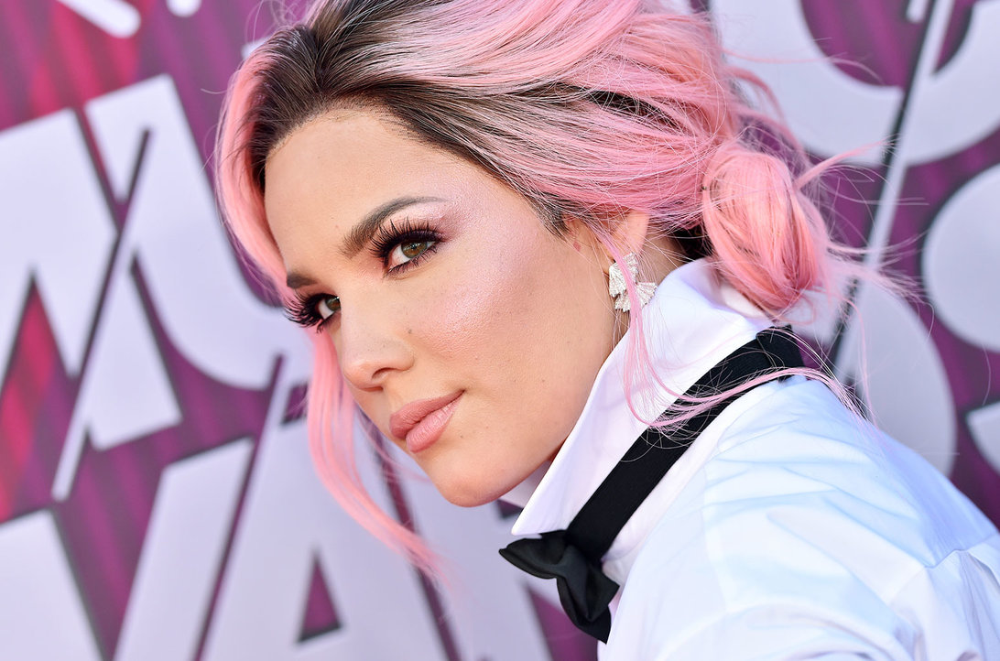

Halsey Gifts BTS With Friendship Bracelets Ahead Of the Billboard Music Awards
4/30/2019 by Tamar Herman
Halsey and BTS are set to perform their hit song “Boy With Luv” together for the first time tomorrow (May 1) at the 2019 Billboard Music Awards, and they may be wearing a special set of friendship bracelets while doing so.
This marks the second year in a row BTS will be performing at the BBMAs, but it’s far from the first time the act’s making an appearance on Stateside television. Over the past few years, the South Korean septet has made numerous appearances.
Adding the Korean word for “friendship” (우정, pronounced oo-jung), her Instagram Story didn’t exactly say who that “everyone” was, but it soon became clear when a member of BTS shared a video of himself wearing the bracelet, tweeting “Thanks!!!” and tagging Halsey.
Though it’s unclear from the post which of the seven BTS members shared the clip, fans were quick to point out that J-Hope has previously worn the Minnie Mouse-decorated Apple Watch seen in the video.
Halsey had previously shared a video, also through her Instagram Story, of boxes featuring her name and the names of each member of BTS, which fans assumed to be a gift for the group ahead of their BBMA performance.
“Boy With Luv” by BTS featuring Halsey made history upon its release by debuting on the Hot 100 at No. 8, the highest-ever charting song in the U.S. by a Korean group.
BTS and Halsey will premiering the first live rendition of their single “Boy With Luv” at the BBMAs tomorrow night, which air live coast to coast at 8 p.m. ET/5 p.m. PT on NBC.